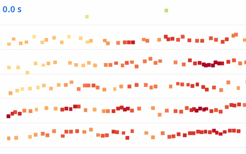

미국 교통부 NGSIM: 로스앤젤레스 US-101 고속도로 약 640m 구간을 건물 위 카메라로 찍어 차량마다 0.1초 간격으로 위치 · 속도 · 차선을 기록한 공개 데이터. 여기서는 차량 번호 600 미만의 60만 줄만 받는다

| vehicle_id | global_time | lane_id | x | y | kmh |
|---|---|---|---|---|---|
| 299 | 1,118,848,896,800 | 1 | 1.8 | 116.1 | 26.8 |
| 39 | 1,118,847,884,300 | 3 | 8.34 | 25.68 | 16.46 |
| 138 | 1,118,848,882,600 | 4 | 12.63 | 546.6 | 11.08 |
| 335 | 1,118,848,991,900 | 5 | 15.88 | 540.6 | 48.07 |
| 141 | 1,118,848,875,200 | 3 | 9.41 | 445.8 | 24.79 |
| 208 | 1,118,848,885,200 | 5 | 15.9 | 325.8 | 46.97 |
| 열 | 종류 | 빈칸 | 고유값 수 | 범위 · 대표값 |
|---|---|---|---|---|
| vehicle_id | 숫자 | 0 | 365 | 1 ~ 365 (평균 185.7) |
| lane_id | 숫자 | 0 | 8 | 1 ~ 8 (평균 2.971) |
| x | 숫자 | 0 | 51,238 | 0.1554 ~ 22.65 (평균 8.992) |
| y | 숫자 | 0 | 475,535 | 0.03597 ~ 668.9 (평균 330.8) |
| kmh | 숫자 | 0 | 7456 | 0 ~ 104.6 (평균 36.01) |
| v_class | 숫자 | 0 | 3 | 1 ~ 3 (평균 2.016) |
| v_length | 숫자 | 0 | 47 | 6 ~ 65.5 (평균 15.9) |
합류 구간 근처에서 느려진다
왼쪽 차선이 더 빠르다. 6 · 7 = 진입 · 진출 차선
| ① 한 행 | 차 한 대의 한 순간 (지난 2초를 보고) |
| ② 입력 X | 지난 2초 동안의 위치 (0.5초 간격 5개, 지금 위치 기준) |
| ③ 출력 y | 앞으로 3초의 위치 (0.5초 간격 6개, x · y) |
| ④ 평가지표 | ADE · FDE (미터) |
| ⑤ 기준선 | 지금 속도 그대로 직진 |
문제를 정할 때 처음 채워 보는 칸들입니다. 여기서 끝이 아니라, 시험 데이터를 어떻게 나눌지 · 틀렸을 때 손해가 얼마인지 · 예측 시점에 정말 알 수 있는 값인지 같은 칸을 더 붙일수록 좋은 문제가 됩니다.
(노트북을 실행하면 여기에 결과가 나온다)
누가, 왜, 어떻게 만든 데이터인지 직접 확인해 보세요.
프로젝트 주제를 고를 때 참고하세요 (일반적인 예시).